Contents
%%%%%%%%%%%%%%%%%%%%%%%%%%%%%%%%%%%%%%%%%%% % Terceiro trabalho de laboratório de PDS % 2020/2021 % % Turno de 3ªfeira 14h % % Grupo 38 % João Silva 90803 % Vasco Araújo 90817 %%%%%%%%%%%%%%%%%%%%%%%%%%%%%%%%%%%%%%%%%%% clc; close all; clearvars;
Parte 1
Questão a)
[x, Fs] = audioread('fugee.wav');
soundsc(x);
Reproduzindo o sinal podemos ouvir uma música com bastante ruído, sendo o mais audível uma crepitação constante. Isto é algo comum em discos de vinil e é causado por acumulação estática ou riscos no disco.
Questão b)
x_length = length(x); x1 = round(x_length/4); x2 = round(x_length/2); x3 = round(3*x_length/4); figure(1); plot(x(1:x1)); title('First quarter of the signal'); xlabel('n'); ylabel('Amplitude [V]'); figure(2); plot(x(x1+1:x2)); title('Second quarter of the signal'); xlabel('n'); ylabel('Amplitude [V]'); figure(3); plot(x(x2+1:x3)); title('Third quarter of the signal'); xlabel('n'); ylabel('Amplitude [V]'); figure(4); plot(x(x3+1:x_length)); title('Fourth quarter of the signal'); xlabel('n'); ylabel('Amplitude [V]');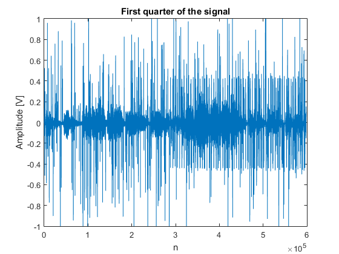 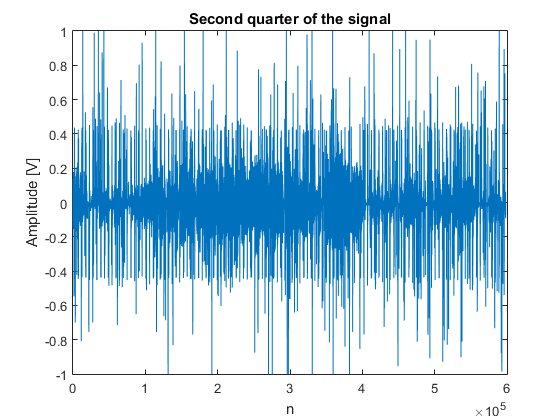 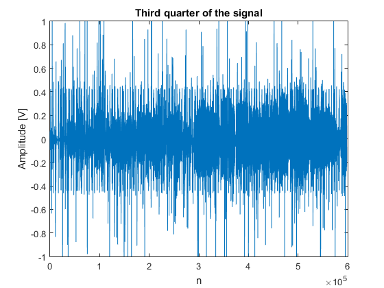 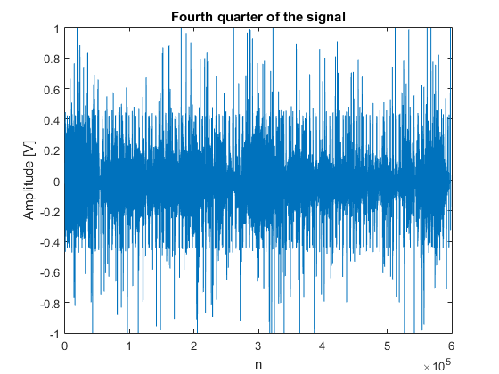
Olhando para o plot podemos claramente ver o ruído, observando picos de amplitude pela canção inteira. Podemos também reparar numa 'parede' de ruído, de -0.4 a 0.4V e que começa quando a bateria entra na música.
Questão c)
X = fft(x); XShift = fftshift(X); P = abs(XShift); f = ((-x_length/2):1:(x_length/2)-1)*Fs/x_length; figure(6); semilogy(f, P); title('Magnitude spectrum'); xlabel('Frequency [Hz]'); ylabel('dB');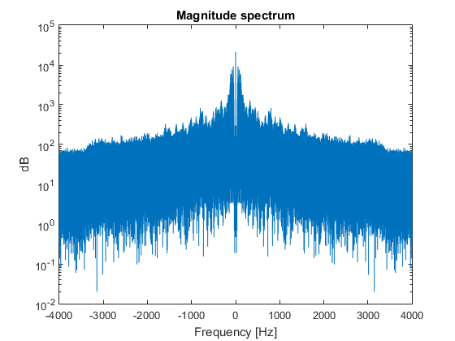
Podemos verificar que a magnitude está espelhada sobre o eixo das ordenadas. Existe uma componente DC acentuada e verifica-se que à medida que a frequência vai aumentando a magnitude diminui.
Parte 2
Questão a)
[B, A] = butter(10, (pi/2)/pi); [H,W] = freqz(B,A); figure(6); freqz(B,A); title('Magnitude of Butterworth filter'); figure(7); plot(W, abs(H)); title('Linear magnitude plot of Butterworth filter'); xlabel('Frequency [Hz]'); ylabel('Amplitude');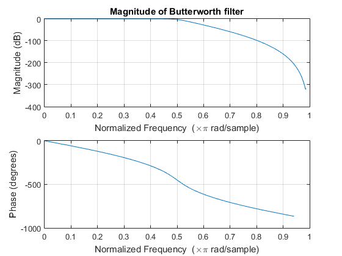 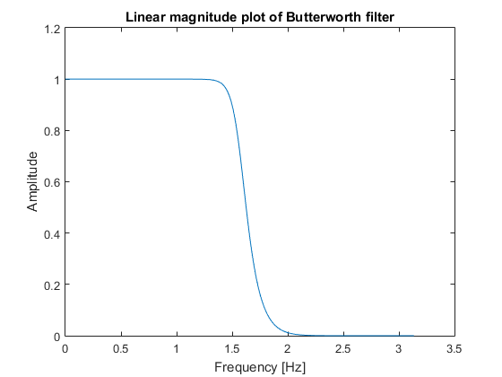
Podemos ver que o filtro de Butterworth se comporta como espectável de um filtro passa-baixo. O filtro não afecta as baixas frequências, apenas começando a atenuação nos 0.5*pi Hz. A atenuação é progressiva, ou seja, quanto mais a frequência aumenta mais o filtro corta o sinal. A mesma informação pode ser observada no plot linear, em que a frequência pi/2 corresponde ao valor sqrt(2)/2, que é o mesmo que dizer -3dB, que é o valor no qual se mede a frequência de corte. Confirma-se assim o funcionamento do filtro.
Questão b)
x = audioread('fugee.wav');
x_length = length(x);
y = filter(B,A, x);
Para Fs = 8000, a frequência de cut-off é de f = pi/2 * (Fs/(2*pi)) = f = Fs/4 = 2 kHz. A difereça entre tempo contínuo e discreto é que um ponto em contínuo correspondente a Fs/2 é mapeado para pi/2 em tempo discreto, e por isso existe variação na frequência de cut-off.
Questão c)
figure(8); plot(x); hold on; plot(y); title('Original and filtered signals'); legend('Original', 'Filtered'); xlabel('n'); ylabel('Amplitude [V]'); figure(9); plot(x(1205500:1205500+400)); hold on; plot(y(1205500:1205500+400)); title('Original and filtered signals zoomed in'); legend('Original', 'Filtered'); xlabel('n'); ylabel('Amplitude [V]');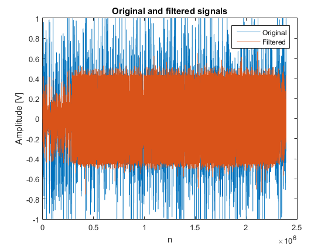 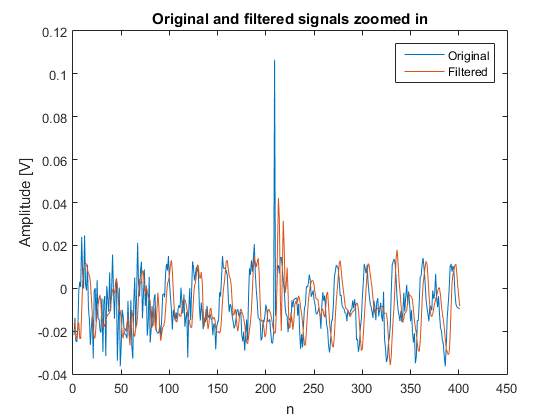
Observando a Figura 8 podemos ver que a maioria do sinal original foi atenuado no sinal filtrado. Todos os picos de amplitude tiveram a sua amplitude diminuída. Na Figura 9 podemos confirmar isto. Por exemplo, no sinal original pode-se ver um claro pico de amplitude que foi bastante reduzido no sinal filtrado.
Questão d)
X = fft(x); XShift = fftshift(X ); PX = abs(XShift); fx = ((-x_length/2):1:(x_length/2)-1)*Fs/x_length; Y = fft(y); YShift = fftshift(Y); PY = abs(YShift); fy = ((-x_length/2):1:(x_length/2)-1)*Fs/x_length; figure(10); semilogy(fx, PX); hold on; semilogy(fy, PY); title('Magnitude spectra of original and filtered signals'); legend('Original', 'Filtered'); xlabel('n'); ylabel('Amplitude [V]');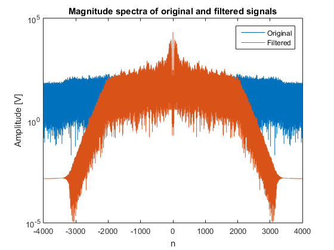
Uma vez que o espectro é espelhado podemo-nos focar apenas na parte positiva do espectro. Para baixas frequências o espectro não foi alterado, no entanto para frequência altas o espectro foi bastante atenuado, como seria espectável de um filtro passa-baixo.
Questão e)
soundsc(y);
Ouvindo o sinal filtrado y podemos observar três coisas: 1) o barulho de clique foi reduzido, pois a frequência alta do sinal foi atenuada, deixando apenas o ruído de baixa frequência 2) os instrumentos de baixa frequência estão mais audíveis, tais como a bateria ou o baixo 3) o som no geral perdeu qualidade pois o filtro não opera apenas no ruído mas sim no sinal inteiro. Por isso, as componentes de alta frequência da música também foram afectadas
Questão f)
[B2, A2] = butter(10, (pi/16)/pi); y2 = filter(B2,A2, x); [B3, A3] = butter(10, (9*pi/10)/pi); y3 = filter(B3,A3, x); Y2 = fft(y2); Y2Shift = fftshift(Y2); PY2 = abs(Y2Shift); fy2 = ((-x_length/2):1:(x_length/2)-1)*Fs/x_length; Y3 = fft(y3); Y3Shift = fftshift(Y3); PY3 = abs(Y3Shift); fy3 = ((-x_length/2):1:(x_length/2)-1)*Fs/x_length; soundsc(y2); soundsc(y3); figure(11); semilogy(fy2, PY2); hold on; semilogy(fy3, PY3); title('Magnitude spectra of y2 and y3'); legend('y2', 'y3');figure(10); semilogy(fx, PX); hold on; semilogy(fy, PY); title('Magnitude spectra of original and filtered signals'); legend('Original', 'Filtered'); xlabel('n'); ylabel('Amplitude [V]');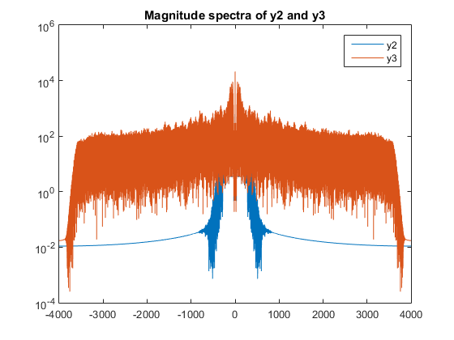 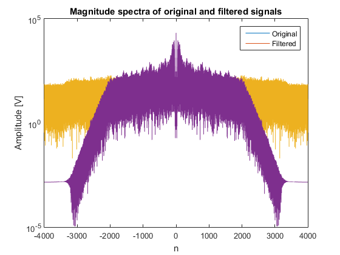
Ouvindo o sinal y2, obtido com frequência de cut-off em pi/16, podemos ver que a música foi bastante alterada. Devido à frequência de cut-off ser tão baixa, os únicos sons que não foram filtrados são os de muito baixa frequência. Logo quase só se ouve o baixo e a bateria. O sinal y3 é o oposto. Com uma frequência de cut-off de 0.9pi, o ruído na música aumentou, mas também aumentou a qualidade do som no geral. Isto pois existe um trade-off em que quanto mais alta for a frequência de cut-off, maior qualidade terá a música, mas menos vai filtrar o ruído.
Parte3
Questão a)
Este filtro é não causal, é estável, é não linear, e é invariante no tempo. Em termos de causalidade, é fácil de mostrar que este filtro não é causal uma vez que requere informação de instantes futuros para calcular a saída no instante atual. Tomando por exemplo o filtro de ordem 3, para calcular a saída no instante 2 é necessário fazer a mediana dos instantes 1, 2 e 3 (y[2] = median(x[1], x[2], x[3])). No que toca à estabilidade, esta classe de filtros é estável uma vez que a saída apenas tende para valores infinitos se o input for também para infinito. Uma vez que a saída é sempre um dos valores de entrada, logo é sempre limitada pelos valores da entrada. Para provar que o filtro não é linear basta demonstrar que não possui a propriedade da sobreposição, isto é, se y1 = medfilt1(x1) e y2 = medfilt1(x2) então y1+y2 = medfilt1(x1+x2). Assumindo que estamos a usar um filtro de ordem 3 e que x1 = [1, 2, 3] e que x2 = [5, 4, 6] vem que y1 = 2 e y2 = 5. Assim y1+y2 deveria ser igual a medfilt1(x1+x2) = medfilt1([6, 6, 9]) = 6, enquanto que y1+y2 = 7. A propriedade da sobreposição não é satisfeita uma vez que há um passo de ordenação nestes filtros e esse passo é não linear. Quanto à invariância no tempo, é fácil de demonstrar que é invariante no tempo. Um sistema diz-se invariante no tempo se y[n] = H(x[n]) e y[n-1] = H(x[n-1]). Utilizando um filtro de ordem 3 para o exemplo, sabe-se que y[n] = median(x[n-1], x[n], x[n+1]). Substituindo n por n-1 obtem-se median(x[n-2], x[n-1], x[n]) que é igual a y[n-1], confirmando assim esta propriedade.
Questão b)
%Calculo do sinal filtrado x_f = medfilt1(x, 3); plot(x); hold on; plot(x_f); xlabel('Tempo'); ylabel('Amplitude'); title('Comparação do sinal original e do filtrado'); legend('original', 'filtrado'); figure(); %Agora zoomed in M = 400; T = 1205500; plot((T:T+M), x(T:T+M)); hold on plot((T:T+M), x_f(T:T+M)); xlabel('Tempo'); ylabel('Amplitude'); title('Comparação do sinal original e do filtrado zoom-in'); legend('original', 'filtrado');
Warning: Negative data ignored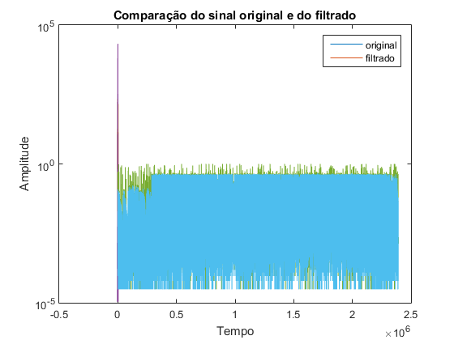 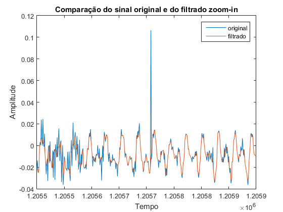
Como acontecia na secção 2, o plot do sinal completo não é fácil de analizar, usando para esse efeito o segundo plot que se foca numa área muito mais restrita onde apenas se tem 1 perturbação. Como se pode ver, no sinal filtrado a perturbação é completamente eliminada. No entanto, é também possível verificar a perda de detalhe que ocorre devido ao tipo de filtro usado. Quando maior a ordem do filtro menos detalhe é preservado.
Questão c)
%Calcula a fft do sinal filtrado X_f = fft(x_f); X_f = fftshift(X_f); freq = (-x_length/2:x_length/2-1)*Fs/x_length; figure(); semilogy(freq, P); hold on; semilogy(freq, abs(X_f)); xlabel('Frequência (log) [Hz]'); ylabel('Magnitude'); title('Comparação da magnitude do sinal original e filtrado'); legend('Original', 'Filtrado');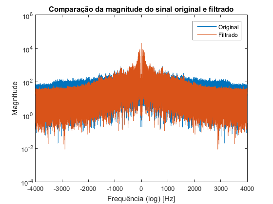
Ao analizar este plot pode-se ver que, ao contrário do que sucedia na secção 2, não há um corte completo na amplitude a altas frequências. Isto resulta num sinal menos perturbado pelo processo de filtragem, sendo que nas baixas frequências o sinal filtrado é basicamente igual ao original e nas altas frequências há apenas uma pequena atenuação da magnitude.
Questão d)
soundsc(x_f);
Ao ouvir o sinal consegue-se perceber que, ao contrário do que acontecia com o filtro passa-baixo, as perturbações foram eliminadas completamente. No entanto, o sinal filtrado parece ter mais ruído comparando com o original. Isto vai ao encontro do resultado obtido em 3b, em que o sinal filtrado perdia detalhe, resultando no ruído que se ouve.
Questão e)
%Calculo do sinal filtrado x_f = medfilt1(x, 9); soundsc(x_f); figure(); %Agora zoomed in M = 400; T = 1205500; plot((T:T+M), x(T:T+M)); hold on plot((T:T+M), x_f(T:T+M)); xlabel('Tempo'); ylabel('Amplitude'); title('Comparação do sinal original e do filtrado zoom-in'); legend('original', 'filtrado'); X_f = fft(x_f); X_f = fftshift(X_f); freq = (-x_length/2:x_length/2-1)*Fs/x_length; figure(); semilogy(freq, P); hold on; semilogy(freq, abs(X_f)); xlabel('Frequência (log) [Hz]'); ylabel('Magnitude'); title('Comparação da magnitude do sinal original e filtrado'); legend('Original', 'Filtrado');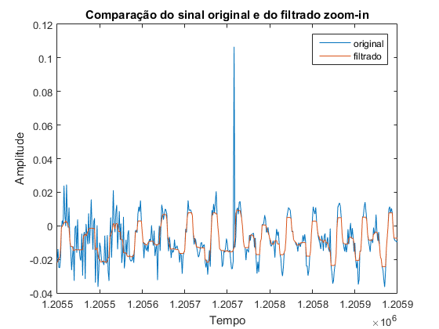 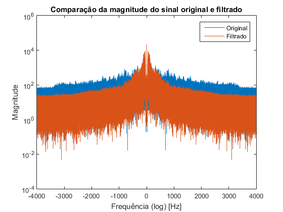
Experimentando filtros de ordem superior a 3 confirmamos que quanto maior a ordem maior será o ruído no sinal filtrado, como seria de esperar. Com ordens menores que 3 (ordem 2) este tipo de perturbação não é eliminado uma vez que para cada instante da saída é feita a média do sinal de entrada nesse instante com o sinal de entrada no instante anterior. Assim os "picos" de amplitude não seriam eliminados, seriam apenas atenuados. O filtro de terceira ordem é assim o que funciona melhor para eliminar as perturbações deste sinal. Comparando o sinal filtrado com o original no dominio do tempo confirmamos que quanto maior a ordem do filtro maior a perda de detalhe no sinal resultante. Comparando o plot obtido com ordem 9 com o obtido com ordem 3 consegue-se ver que o de ordem 3 segue mais fielmente o sinal original. Comparando também as respostas em frequências observa-se que não houve uma alteração notável para ordens diferentes, o que faz sentido uma vez que este tipo de filtros não opera no dominio da frequência, operando nas amostras do sinal em si.
Questão f)
Para remover este tipo de ruído chegámos à conclusão que o filtro da mediana é o melhor, face ao filtro passa-baixo. Comparando os sinais resultantes do processo de filtragem para cada um, pode-se confirmar que no do filtro passa-baixo ainda se ouvem as perturbações e o sinal perde qualidade, enquanto que no filtro da mediana o ruído é eliminado havendo apenas uma pequena, quase impercetível para o filtro de ordem 3, descida na qualidade do sinal. Uma das causas que pensamos que contribui para isto é o facto do filtro passa-baixo operar no dominio da frequência, enquanto que o filtro da mediana opera sobre o sinal original em si. Este último (usando ordem 3 para exemplificar), para cada instante de tempo usa 3 amostras do sinal e ordena-as, escolhendo depois o valor central como valor final. Como as perturbações são valores muito mais elevados em valor absoluto que o sinal e são pontuais (ocupam apenas 1 instante de tempo), isto garante que estão sempre nas extremidades das 3 amostras escolhidas, sendo assim completamente eliminadas. Por outro lado, o filtro passa-baixo opera sobre a frequência, diminuindo a magnitude das componentes acima da frequência de corte. Analisando o plot do sinal filtrado da secção 2 confirmamos que tal acontece, as perturbações têm amplitude menor do que no sinal original. No entanto não são eliminadas e surge o problema adicional de as componentes de alta frequência serem perdidas. Em suma, para este tipo de perturbações, o filtro da mediana é melhor do que o filtro passa-baixo.